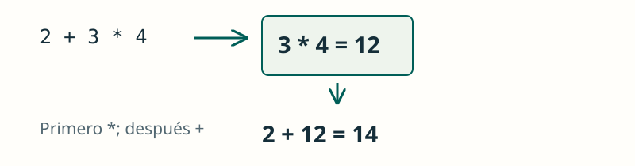

Operadores y expresiones
JAVA / FUNDAMENTOS
Operar con datos
Los operadores transforman valores y permiten construir condiciones.
Un operador actúa sobre uno o varios valores, llamados operandos. El resultado puede utilizarse en otra operación o guardarse en una variable.
Distingue asignación (=), comparación (==) y cálculo. Una expresión produce un resultado de un tipo concreto.
int resto = 7 % 2; // 1
boolean mayor = 20 >= 18; // true
int total = (2 + 3) * 4; // 20
JAVA / FUNDAMENTOS
División entera
El tipo de los operandos influye en el resultado.
Java elige la operación según los tipos de los operandos. Dividir dos enteros descarta la parte decimal: no redondea al entero más próximo.
Ver la explicación
Ambos operandos son enteros: el cociente entero es 3. Con 7 / 2.0 se obtiene 3.5.
System.out.println(7 / 2);JAVA / FUNDAMENTOS
Actualizar una variable
Una asignación combinada usa el valor actual.
Primero se calcula el nuevo valor con el contenido actual y después se guarda. Para estos int, puntos += 2 equivale a puntos = puntos + 2.
Ver la explicación
puntos += 2 equivale aquí a puntos = puntos + 2: guarda 5.
int puntos = 3;
puntos += 2;
System.out.println(puntos);JAVA / FUNDAMENTOS
Combinar condiciones
Con && deben cumplirse las dos condiciones.
Cada comparación produce un booleano. Con && exigimos que se cumplan ambas condiciones; con || basta con que se cumpla una.
Ver la explicación
edad >= 18 es false; por eso la conjunción es false aunque tenga entrada.
int edad = 17;
boolean tieneEntrada = true;
System.out.println(edad >= 18 && tieneEntrada);JAVA / FUNDAMENTOS
Prioridad y paréntesis
Los paréntesis cambian qué operación se hace primero.
La multiplicación tiene prioridad sobre la suma. Los paréntesis agrupan lo que queremos calcular antes y hacen más fácil leer la expresión.
Ver la explicación
Primero se calcula 2 + 3 = 5 y después 5 * 4 = 20.
System.out.println((2 + 3) * 4);PRUEBA Y OBSERVA
La división depende del tipo
Cambia los operandos y compara la división entera con la decimal. Prueba también un número negativo o un divisor cero.
Compara el mismo cálculo con un divisor int y con uno double. Los negativos permiten comprobar que la división entera trunca hacia cero.
Simulación didáctica de las operaciones mostradas; no ejecuta código Java.